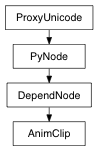

Return an array indicating which channels of the clip are absolute and which are relative. The length of the array is equal to the members in the character. A value of one in the array indicates absolute and a value of 0 indicates relative.
| Return type: | int list |
|---|
Derived from api method maya.OpenMayaAnim.MFnClip.getAbsoluteChannelSettings
Return the value of this clip’s enable attribute
| Return type: | bool |
|---|
Derived from api method maya.OpenMayaAnim.MFnClip.getEnabled
Return two arrays: the first contains the animCurves associated with this clip. The second contains the character member that is driven by this animCurve.
| Return type: | (PyNode list, PyNode list) |
|---|
Derived from api method maya.OpenMayaAnim.MFnClip.getMemberAnimCurves
Return the value of this clip’s post cycle attribute
| Return type: | float |
|---|
Derived from api method maya.OpenMayaAnim.MFnClip.getPostCycle
Return the value of this clip’s pre cycle attribute
| Return type: | float |
|---|
Derived from api method maya.OpenMayaAnim.MFnClip.getPreCycle
Return the value of this clip’s scale attribute
| Return type: | float |
|---|
Derived from api method maya.OpenMayaAnim.MFnClip.getScale
Return the value of the start frame of this clip’s source duration. The sourceStart and sourceDuration define the region of the animCurve that is treated as the clip.
| Return type: | Time |
|---|
Derived from api method maya.OpenMayaAnim.MFnClip.getSourceDuration
Return the value of the start frame of this clip’s source clip. The sourceStart and sourceDuration define the region of the animCurve that is treated as the clip.
| Return type: | Time |
|---|
Derived from api method maya.OpenMayaAnim.MFnClip.getSourceStart
Return the value of this clip’s start frame
| Return type: | Time |
|---|
Derived from api method maya.OpenMayaAnim.MFnClip.getStartFrame
Return the value of this clip’s weight attribute
| Return type: | float |
|---|
Derived from api method maya.OpenMayaAnim.MFnClip.getWeight
Return true or false as to whether the clip node represents the source clip or an instanced clip. All clips maintained by the clipScheduler node and visible in the TraX editor are instanced clips. All clips maintained by the clipLibrary node and visible in the Visor are non-instanced clips, also called “Source Clips”. Each instanced clip has a corresponding source clip.
| Return type: | bool |
|---|
Derived from api method maya.OpenMayaAnim.MFnClip.isInstancedClip
Return true or false as to whether the clip node represents a pose.
| Return type: | bool |
|---|
Derived from api method maya.OpenMayaAnim.MFnClip.isPose
Set which channels of the clip are absolute and which are relative. The length of the specified array should be equal to the number of members in the character. A value of one in the array indicates absolute and a value of 0 indicates relative.
| Parameters: |
|
|---|
Derived from api method maya.OpenMayaAnim.MFnClip.setAbsoluteChannelSettings
Specify whether or not the clip is enabled. Note: should not be called for source clips since the enabled attribute is ignored on source clips.
| Parameters: |
|
|---|
Derived from api method maya.OpenMayaAnim.MFnClip.setEnabled
Specify whether or not this clip node should be tagged as a pose rather than a clip. By default, clip nodes are not poses.
| Parameters: |
|
|---|
Derived from api method maya.OpenMayaAnim.MFnClip.setPoseClip
Undo is not currently supported for this method
Specify the post cycle value for the clip.
| Parameters: |
|
|---|
Derived from api method maya.OpenMayaAnim.MFnClip.setPostCycle
Specify the pre cycle value for the clip.
| Parameters: |
|
|---|
Derived from api method maya.OpenMayaAnim.MFnClip.setPreCycle
Specify a scale value for the clip.
| Parameters: |
|
|---|
Derived from api method maya.OpenMayaAnim.MFnClip.setScale
Specify the start frame and duration for the source clip associated with this clip.
| Parameters: |
|---|
Derived from api method maya.OpenMayaAnim.MFnClip.setSourceData
Undo is not currently supported for this method
Specify the start frame for the instanced clip. Note: should not be called for source clips since the start frame attribute is ignored on source clips.
| Parameters: |
|
|---|
Derived from api method maya.OpenMayaAnim.MFnClip.setStartFrame
Specify a weight value for the clip.
| Parameters: |
|
|---|
Derived from api method maya.OpenMayaAnim.MFnClip.setWeight
Return the source clip associated with the MFnClip’s clip
| Return type: | PyNode |
|---|
Derived from api method maya.OpenMayaAnim.MFnClip.sourceClip